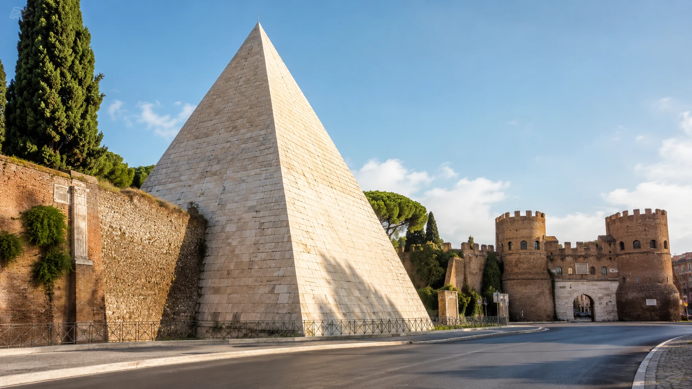
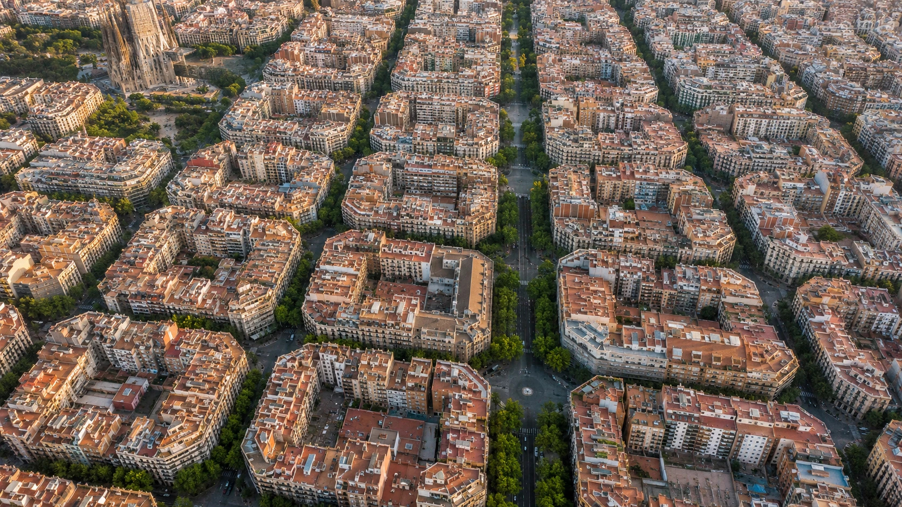
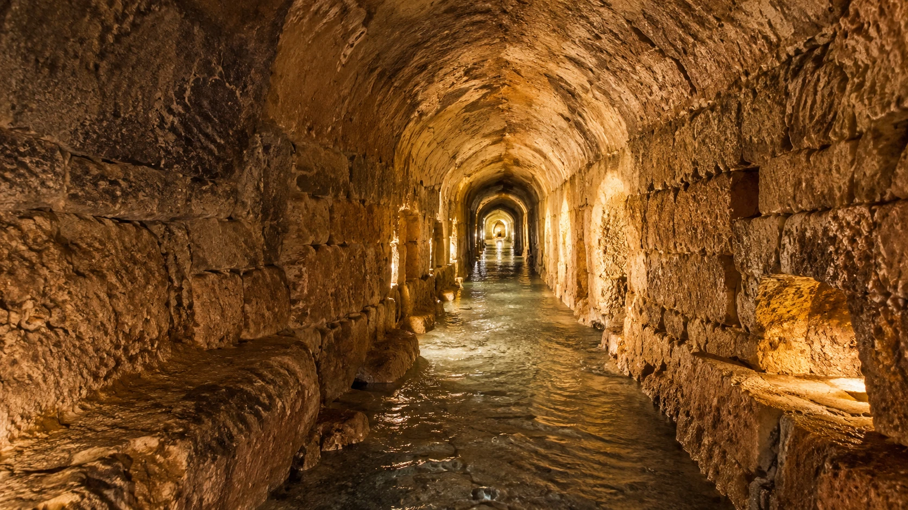
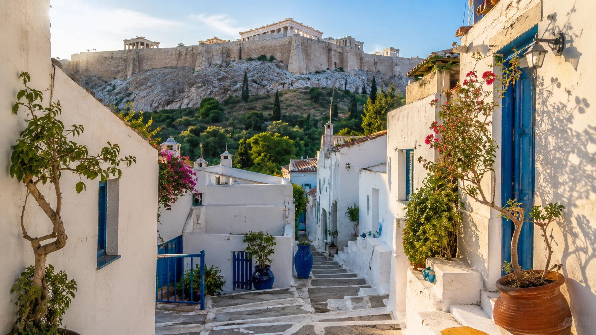
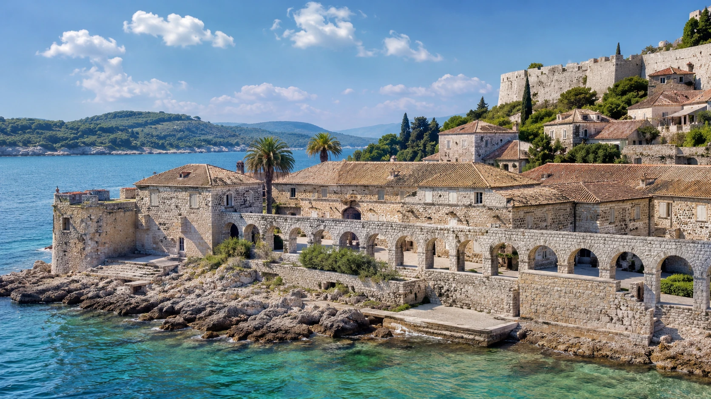

Tajomstvá Ríma, Barcelony, Palerma, Atén a Dubrovníka
Rím, Barcelona, Palermo, Atény či Dubrovník patria medzi najznámejšie mestá Stredomoria. Denne nimi prejdú tisíce turistov, ktorí mieria ku Koloseu, Sagrade Famílii, na palermské trhy, Akropolu alebo dubrovnícke hradby.
Len niekoľko ulíc od hlavných turistických trás sa však ukrývajú príbehy, ktoré mnohí návštevníci vôbec nepoznajú. Rímska pyramída, zvláštny tvar barcelonských ulíc, podzemné vodné tunely v Palerme, kúsok gréckeho ostrova pod Akropolou aj karanténny systém, ktorý Dubrovník zaviedol už v stredoveku.
A čo je najlepšie? Väčšinu týchto miest môžu vidieť aj bežní turisti. Niekde stačí vystúpiť z metra, inde treba rezerváciu a pri jednom z miest sa treba pripraviť aj na vodu, úzke chodby a gumáky.
1. Rím má vlastnú viac než 2 000-ročnú pyramídu
Keď sa povie pyramída, väčšina ľudí si predstaví Egypt. Jedna skutočná staroveká pyramída však stojí aj v Ríme – medzi rušnými cestami, historickými hradbami a modernou mestskou dopravou.
Cestiova pyramída, po taliansky Piramide Cestia, vznikla približne medzi rokmi 18 až 12 pred naším letopočtom. Nebola postavená pre egyptského faraóna, ale ako hrobka rímskeho politika a úradníka Gaia Cestia.
Po dobytí Egypta Rímom sa medzi bohatými Rimanmi rozšírila móda inšpirovaná egyptskou kultúrou. Gaius Cestius si preto zvolil hrobku v tvare pyramídy. Podľa nápisu na stavbe ju jeho dedičia museli dokončiť najneskôr do 330 dní, inak by prišli o dedičstvo.
Pyramída je vysoká približne 36 metrov a jej vonkajší povrch pokrývajú svetlé kamenné dosky. O niekoľko storočí neskôr bola začlenená do Aureliánskych hradieb, ktoré chránili Rím. Práve to pravdepodobne významne prispelo k jej zachovaniu. :contentReference[oaicite:1]{index=1}

Môžu sa k pyramíde dostať turisti?
Áno. Pyramídu možno bezplatne vidieť zvonka z okolia Piazzale Ostiense a Porta San Paolo. Najjednoduchšie je vystúpiť na stanici metra Piramide na linke B.
Iné je to s návštevou vnútra. Cestiova pyramída nie je otvorená ako bežné múzeum. Oficiálne turistické informácie Ríma uvádzajú, že vnútorné priestory sú prístupné iba počas mimoriadnych otvorení a vybraných podujatí. Pred cestou je preto potrebné skontrolovať aktuálny kalendár návštev. :contentReference[oaicite:2]{index=2}
Praktický tip
Najzaujímavejší pohľad na pyramídu ponúka okolie pri bráne Porta San Paolo a pri susednom Nekatolíckom cintoríne. Ten má samostatný vstup a pravidelné otváracie hodiny. Kombinácia pyramídy, rímskych hradieb a pokojného cintorína vytvára úplne inú atmosféru než preplnené centrum pri Fontáne di Trevi.
2. Barcelona bola navrhnutá tak, aby mala viac svetla, vzduchu a zelene
Pri pohľade na Barcelonu z výšky si nemožno nevšimnúť pravidelnú sieť ulíc a bloky so zvláštne zrezanými rohmi. Nejde iba o efektný vzhľad mesta.
Štvrť Eixample navrhol v 19. storočí katalánsky inžinier Ildefons Cerdà. Barcelona sa po odstránení starých mestských hradieb potrebovala rozšíriť a Cerdà chcel vytvoriť zdravšie a modernejšie mesto.
Zrezané rohy blokov mali zväčšiť priestor na križovatkách, zlepšiť rozhľad a uľahčiť pohyb dopravy. Širšie ulice mali priniesť viac svetla a lepšie prúdenie vzduchu. Pôvodná predstava počítala aj s otvorenejšími vnútornými priestormi blokov a väčším množstvom zelene.
Realita však bola postupne hustejšia. Tlak na výstavbu spôsobil, že mnohé vnútorné dvory zaplnili ďalšie budovy, sklady a prevádzky. Časť z nich mesto neskôr opäť premenilo na verejné záhrady. Oficiálne materiály Barcelony dnes uvádzajú viaceré vnútroblokové záhrady, ktoré slúžia obyvateľom aj návštevníkom. :contentReference[oaicite:3]{index=3}

Môžu túto zaujímavosť vidieť turisti?
Áno – a pravdepodobne cez ňu prejdú bez toho, aby si uvedomili, čo vlastne sledujú.
Ulice Eixamplu sú voľne prístupné a bez vstupného. Najlepšie možno tvar blokov pozorovať na širokých križovatkách medzi Passeig de Gràcia, Rambla de Catalunya, Passeig de Sant Joan a okolím Sagrady Família.
Nie všetky vnútorné dvory sú však verejné. Mnohé patria obytným domom a turistom nie sú prístupné. Niektoré boli naopak premenené na mestské záhrady, do ktorých sa dá vstúpiť počas ich otváracích hodín.
Jedným z príkladov je priestor okolo historickej vodárenskej veže Torre de les Aigües, ktorý pripomína pôvodnú myšlienku zeleného vnútrobloku. :contentReference[oaicite:4]{index=4}
Praktický tip
Pri prechádzke sa nepozerajte iba na Gaudího fasády. Postavte sa na jednu zo zrezaných križovatiek a všimnite si, koľko priestoru na nej vzniká. Až vtedy začne Cerdàov plán dávať skutočný zmysel.
Najlepší celkový obraz geometrie Barcelony však ponúkajú vyššie položené vyhliadky alebo letecké zábery.
3. Pod Palermom stále tečie voda historickými tunelmi
Palermo si návštevníci spájajú najmä s hlučnými trhmi, pouličným jedlom, arabsko-normanskou architektúrou a chaotickou dopravou. Pod časťami mesta sa však ukrýva tichý a úplne odlišný svet.
Nachádzajú sa tam historické vodné systémy známe ako qanaty alebo karizy. Ich úlohou bolo zachytávať podzemnú vodu a pomocou mierneho sklonu ju privádzať k obydliam, záhradám a poľnohospodárskej pôde.
Jedným z najzaujímavejších je Qanat Gesuitico Alto pod štvrťou Altarello. Prístupná časť systému má podľa mesta Palermo približne 1 100 metrov. Chodby sú zvyčajne vysoké okolo 1,55 metra a široké iba 60 až 80 centimetrov.
Systém je stále aktívny. Množstvo pretekajúcej vody sa mení podľa ročného obdobia a v zime môže byť výrazne vyššie než počas leta. Niektoré časti chodieb sa nachádzajú približne 8 až 16 metrov pod povrchom. :contentReference[oaicite:5]{index=5}

Môžu qanat navštíviť turisti?
Áno, ale iba po predchádzajúcej rezervácii a so sprievodcom. Nejde o miesto, kam možno jednoducho prísť a kúpiť si lístok pri vchode.
Podľa údajov zverejnených turistickým portálom mesta Palermo trvá prehliadka približne hodinu a pol. Speleologickí sprievodcovia poskytujú návštevníkom prilbu so svetlom a gumové čižmy. Mesto zároveň odporúča priniesť si kompletné náhradné oblečenie. :contentReference[oaicite:6]{index=6}
Aktuálne zverejnená cena je 10 eur za osobu, pričom uvedená podmienka počíta so skupinou minimálne 15 ľudí. Pri jednotlivcoch alebo menších skupinách je preto potrebné vopred overiť, či sa možno pripojiť k už pripravovanej prehliadke. Cena aj podmienky sa môžu meniť. :contentReference[oaicite:7]{index=7}
Pre koho návšteva nemusí byť vhodná?
Chodby sú nízke, úzke, vlhké a preteká nimi voda. Návšteva preto nemusí byť vhodná pre ľudí s klaustrofóbiou, obmedzenou pohyblivosťou alebo výraznými problémami s chrbticou.
To je praktické hodnotenie vychádzajúce z rozmerov a charakteru trasy – pred rezerváciou je rozumné zdravotné a pohybové obmedzenia konzultovať priamo s organizátorom.
4. Priamo pod Akropolou sa ukrýva malá ostrovná dedinka
Stačí odísť z rušných ulíc štvrte Plaka, vystúpiť po niekoľkých schodoch a Atény sa zrazu začnú podobať na grécky ostrov.
Anafiotika leží na severovýchodnom svahu pod Akropolou. Tvoria ju malé biele domčeky, farebné okenice, úzke chodníky, schody, mačky a množstvo rastlín. Miesto pripomína kykladské ostrovy, hoci more odtiaľto neuvidíte.
Štvrť vznikla v 19. storočí. Do nového gréckeho hlavného mesta vtedy prišli stavitelia a kamenári z ostrova Anafi, ktorí pracovali na významných stavbách v Aténach. Pod Akropolou si vytvorili domovy podobné tým, ktoré poznali zo svojho ostrova. :contentReference[oaicite:8]{index=8}

Je Anafiotika voľne prístupná?
Áno. Prechádzka štvrťou je bezplatná a bez vstupnej brány. Nie je potrebná rezervácia ani vstupenka na Akropolu.
Treba však pamätať na jednu dôležitú vec: Anafiotika nie je turistická kulisa ani skanzen. Je to obytná štvrť, v ktorej stále žijú ľudia.
Mesto Atény preto návštevníkom pripomína, že Anafiotika je síce krásna, ale zároveň rezidenčná, a turisti by sa mali správať ako ohľaduplní susedia. Nevstupovať na súkromné terasy, nefotiť ľudí cez okná, nekričať v úzkych uličkách a neblokovať vstupy do domov. :contentReference[oaicite:9]{index=9}
Praktický tip
Najpríjemnejšia návšteva býva skoro ráno alebo neskôr popoludní, keď je menej horúco a uličky nie sú také plné.
Treba počítať so schodmi, nerovným povrchom a veľmi úzkymi priechodmi. Pre kočíky a ľudí so zníženou pohyblivosťou môže byť pohyb po štvrti náročný.
Anafiotika je ideálna na pomalú prechádzku. Nesnažte sa nájsť jednu konkrétnu atrakciu – najväčšou zaujímavosťou je samotná atmosféra miesta.
5. Dubrovník zaviedol karanténne pravidlá už v roku 1377
Dubrovník bol významným obchodným mestom, do ktorého prichádzali lode, obchodníci, cestujúci aj tovar z rôznych častí Stredomoria. Spolu s nimi však mohli do mesta doraziť aj nebezpečné infekčné choroby.
V roku 1377 zaviedla vtedajšia Dubrovnícka republika pravidlo, podľa ktorého ľudia prichádzajúci z oblastí zasiahnutých nákazou nemohli okamžite vstúpiť do mesta. Najskôr museli stráviť určitý čas v izolácii na vyhradenom mieste.
Pôvodne išlo o 30-dňový pobyt, označovaný ako trentina. Neskorší 40-dňový systém sa spája so slovom karanténa, odvodeným od talianskeho výrazu pre štyridsať.
Je však dôležité odlíšiť samotné pravidlo od dnešných budov. Súčasný komplex Lazareti pri východnej bráne Dubrovníka nevznikol už v roku 1377. O jeho umiestnení sa rozhodlo v roku 1590 a budovaný bol najmä v rokoch 1627 až 1647.
Tvorí ho desať kamenných hál a päť vnútorných nádvorí. Ľudia a tovar tam čakali pred povolením vstupu do mesta. :contentReference[oaicite:10]{index=10}

Môžu Lazareti navštíviť turisti?
Áno, ale dnes nejde o klasické múzeum s jednou pokladňou a nemennou prehliadkovou trasou.
Komplex stojí pri východnom vstupe do historického centra a turista sa k nemu dostane bez problémov. Lazareti dnes fungujú ako kultúrne, spoločenské a gastronomické centrum. Konajú sa tam výstavy, koncerty, folklórne vystúpenia, divadlo, workshopy a ďalšie podujatia. :contentReference[oaicite:11]{index=11}
Prístup do jednotlivých hál preto závisí od aktuálneho programu. Časť areálu a jeho okolie možno vidieť počas bežnej prechádzky, ale na niektoré výstavy, predstavenia alebo koncerty môže byť potrebná vstupenka.
Najlepší spôsob, ako si Lazareti pozrieť aj zvnútra, je vybrať si podujatie v aktuálnom kultúrnom programe. Počas leta sa v komplexe konajú aj vystúpenia folklórneho súboru Linđo. :contentReference[oaicite:12]{index=12}
Známe mestá, ktoré stále dokážu prekvapiť
Najväčšie stredomorské destinácie nemusia znamenať iba preplnené atrakcie a miesta známe zo sociálnych sietí.
V Ríme sa môžete postaviť pred antickú pyramídu. V Barcelone pochopiť, prečo majú celé mestské bloky zrezané rohy. V Palerme zostúpiť do podzemného vodného systému. V Aténach sa prejsť dedinkou pripomínajúcou Kyklady a v Dubrovníku navštíviť priestory, ktoré kedysi chránili mesto pred epidémiami.
Niektoré z týchto miest sú úplne bezplatné. Iné si vyžadujú rezerváciu, vhodné oblečenie alebo správne načasovanie. Všetky však ukazujú, že aj za najznámejšou pohľadnicou sa často ukrýva druhý, oveľa menej známy príbeh.
Rýchly prehľad prístupu
| Miesto | Prístup pre turistov | Vstupné |
|---|---|---|
| Cestiova pyramída, Rím | Exteriér voľne prístupný, vnútro iba počas mimoriadnych otvorení | Zvonka bezplatne |
| Eixample, Barcelona | Verejné ulice voľne, niektoré vnútroblokové záhrady podľa otváracích hodín | Väčšinou bezplatne |
| Qanat Gesuitico Alto, Palermo | Iba po rezervácii a so speleologickým sprievodcom | Aktuálne uvádzaných 10 € za osobu pri min. 15-člennej skupine |
| Anafiotika, Atény | Voľne prístupná obytná štvrť | Bezplatne |
| Lazareti, Dubrovník | Okolie a časti areálu prístupné, interiéry podľa programu | Podľa konkrétneho podujatia |
Praktické informácie a ceny sú spracované podľa údajov dostupných v júli 2026. Otváracie hodiny, ceny a podmienky vstupu sa môžu meniť, preto ich odporúčame pred cestou overiť na oficiálnych stránkach.
Poznámka Letom po Stredomorí: historické a praktické informácie v článku vychádzajú z AI cestovateľského prieskumu a z oficiálnych alebo odborných zdrojov. Text nepredstavuje tvrdenie, že sme osobne absolvovali všetky uvedené prehliadky.